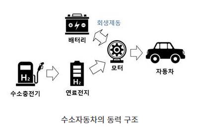
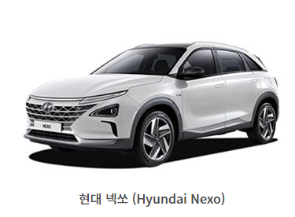

수소자동차(HV)는 수소(H2)를 연료로 사용하는 친환경 자동차입니다. 넓은 의미에서 수소차는 수소전기차(FCEV)와 수소연료차(HFC)를 모두 포함하는 말입니다. 수소연료차는 이점이 적어, 보통 수소자동차라고 하면 수소전기차를 의미합니다. 수소전기차는 전기자동차와 함께 차세대 교통수단으로 개발되고 있습니다. 수소전기차는 회생제동을 통해 내연기관 차량에 비해 연비와 출력이 우수하고, 전기자동차보다 주행거리가 길고 충전 시간이 짧다는 장점이 있습니다. 수소전기차는 주행 중에 외부 공기를 흡입하여 깨끗이 정화한 후 배출하기 때문에 ‘달리는 공기청정기’라고 불리기도 합니다.

수소자동차의 종류
수소전기차(FCEV)
수소전기차(FCEV; Fuel Cell Electric Vehicle)는 충전소에서 충전한 수소를 고압으로 저장하는 수소 저장 시스템, 수소 탱크의 수소와 공기 중의 산소를 화학반응시켜 전기를 만드는 연료 전지 시스템, 연료 전지에서 생산된 전기를 저장할 고전압 배터리, 배터리에 저장된 전기로 바퀴를 구동하는 구동모터 등으로 구성되어 있습니다.
수소전기차는 동력원인 전기에너지를 사용해 주행하여 배기가스를 배출하지 않습니다. 수소전기차는 수소(H2)와 산소(O2)를 결합해 전기를 만드는 연료전지를 탑재한 자동차입니다. 순수한 물(H2O)만 배출하기 때문에 온실가스나 각종 유해물질에 의한 환경파괴를 해결할 수 있는 환경친화적인 자동차입니다. 외부 공기로부터 순수한 산소를 얻는 과정에서 공기정화 시스템을 통해 정화한 공기를 사용한 후 배출하기 때문에 ‘달리는 공기청정기’의 역할도 합니다.
수소자동차는 내연기관 자동차와 달리 엔진이 없고, 전기자동차와 다르게 전기공급 없이 내부에서 전기를 생산합니다. 전기자동차는 외부로부터 전기에너지를 공급받아 충전해 사용하는 배터리를 사용하지만, 수소자동차는 차체 내에서 연료전지 시스템을 통해 전기에너지를 직접 생산하는데 그 과정 중 가장 중요한 장치가 연료전지입니다. 수소자동차에는 수소만 있으면 언제든 연료전지를 작동할 수 있는데, 수소와 산소가 결합하면서 만들어내는 화학에너지를 전기에너지로 변환하여 사용합니다.
2H2 + O2 → 2H2O
연료전지 시스템은 전기 화학 반응으로 전기에너지를 생산합니다. 연료전지는 두 개의 전극과 그 사이에 수소이온을 전달하는 전해질 막으로 구성되어 있습니다. 수소 탱크에서 나온 수소와 외부 공기에서 포집한 산소를 각각의 전극에 공급하고, 수소 측 전극에는 수소 분자가 수소이온과 전자로 분리되고, 수소이온이 산소와 결합할 때 물이 생기는데 이때 만들어진 물은 수소자동차의 유일한 부산물로 남은 공기와 함께 대기 중으로 배출됩니다. 이러한 과정을 거치면 두 전극 사이에 약 0.7볼트의 전압이 발생하는데 이것이 수소의 화학에너지가 전기에너지로 변환하는 과정입니다. 이를 직렬로 연결해 원하는 전압을 만들면 연료전지 자동차의 모터를 구동시키는 동력원인 전기에너지로 사용할 수 있습니다.
연료전지의 성능은 수소 분자를 이온 상태로 분해하여, 분해한 수소이온과 산소를 결합하는 과정이 얼마나 효율적인가에 따라 결정됩니다. 지금까지는 이 반응을 촉진하는 촉매제로 자동차 1대당 약 70g 정도 필요한 백금(Pt)이 가장 합리적인 물질로 꼽혀 사용되고 있습니다. 업체들이 고가의 백금을 대체할 수 있는 저렴하고 효율적인 촉매 물질을 개발에 힘쓰는 이유도 이 때문입니다.
수소연료차(HFC)
수소연료차(HFC; Hydrogen Fueled Car) 또는 수소내연기관자동차(水素內燃機關自動車, HICEV, Hydrogen Internal Combustion Engine Vehicle)는 일반적인 내연기관 자동차와 동일하게 내연기관에서 원료인 수소를 태워 구동하는 자동차입니다. 수소를 폭발시켜 얻은 에너지를 회전에너지로 전환시켜 구동력을 얻습니다. 내연기관을 사용하지만 수소의 고성능과 친환경성은 그대로입니다. 하지만 가솔린보다 단위 체적당 에너지가 낮으며, MPI 방식의 경우 가솔린에 비해 출력이 약 80%밖에 되지 않아 출력을 위해서는 터보차저와 직분사가 필요합니다. 내연기관에 들어가는 가솔린은 액체를 기체로 바꿔주는 시스템을 사용하는데, 수소는 기체이므로 개량된 시스템이 적용됩니다. 연료 특성에 맞춰서 연소 시스템을 새로 개량해야 하는 데다 소비자 입장에서 특별한 장점은 없으면서 내연기관의 단점은 여전하여 주목받지 못하고 있습니다. 그러한 이유로 현재는 수소연료차에 비해 수소전기차가 집중적으로 연구되고 있습니다. 또한, 내연기관의 차기 교통수단 중 가능성이 가장 높은 전기자동차가 급격하게 성장하여 수소연료차는 관심에서 멀어지나고 있습니다. 하지만 수소자동차 진영에서는 전기자동차 특유의 한계점이 많은 관계로 분명 수소연료차의 시대가 올 것이라고 예상하고 있습니다.
수소 원료
수소 원료의 생산방식
수소자동차의 동력원인 수소를 채취하는 방법에는 세 가지가 있는데, 추출(개질) 수소, 부생 수소, 수전해 수소가 있습니다. 추출(개질) 수소는 천연가스를 고압, 고온에서 분해해 생산하는 수소로 세계에서 가장 보편적으로 사용하는 생산 방법입니다. 하지만 온실가스인 이산화탄소(CO₂)가 함께 발생하는 단점도 있으며, 발생한 CO₂는 소화기나 탄산음료 등의 탄산 산업의 원료로 활용이 가능합니다. 다음으로, 부생 수소는 석유화학 공정 중에 함께 발생하는 수소를 채취하는 방법입니다. 석유화학 관련 산업이 발달한 대한민국에서 보편화된 수소 공급 방식으로서 부가적으로 발생한 수소를 활용하는 것으로 효율적이며 경제성이 높습니다. 하지만 수소 자체를 위한 공정이 아니므로 생산량에 한계가 있는 편입니다. 마지막인 수전해 수소는 풍력이나 태양열 등의 신재생 에너지로 생산한 전기로 물을 분해하여 생산하는 수소입니다. 가장 친환경적인 수소 생산 방식으로 중장기적으로 인프라 구축이 필요한 생산방식이지만, 현재로서는 가장 높은 생산비용이 발생하여 경제성이 떨어집니다.
수소 원료의 이동방식
다양한 방법을 사용하여 채취한 수소를 수소자동차에 사용하기 위해서는 이동이 필요합니다. 이동 방식에도 세 가지가 있습니다. 첫 번째 방식은 20~450bar에서 압축한 고압가스의 형태로 저장하는 방법으로 가장 저렴한 운송 방법입니다. 액체 형태로 바꾸어 저장하는 방법도 있는데 수소를 영하 253도에서 액화시켜 부피를 800분의 1로 줄여 액화수소의 형태로 저장하는 방법입니다. 액화수소는 저장 및 운반 비용이 높지만 대량으로 저장이 가능하여 효율성이 높습니다. 또, 암모니아와 수소를 결합해 저장하는 방법도 있습니다. 암모니아는 전 세계적으로 연간 2억 톤 이상이 생산되어 산업 곳곳에 사용되고 있어 현존하는 장거리 운송 및 대용량 저장을 위해 구축된 인프라를 추가로 발생하는 비용 없이 활용할 수 있다는 장점이 있으며, 상온과 상압에서도 운송이 가능한 특징이 있습니다. 다만, 암모니아에서 수소를 추출하는 분해반응은 고온, 고압인 상황에서 진행되기 때문에 상당히 많은 열을 공급해야 한다는 문제가 있습니다.
수소차의 장단점
수소차의 장점
수소자동차는 가솔린 사용 없이 오직 수소와 산소만으로 전기를 자체 생성하여 구동되기 때문에 환경을 파괴하는 배기가스 배출이 전혀 없고 배출하는 물질은 물뿐으로 친환경적입니다. 또한 수소의 열량은 내연기관 연료의 동일 중량당 약 3배로 연료로서의 수소의 성능이 우수하며 기존 친환경 자동차에 대비하여 충전 시간이 짧습니다. 전기자동차는 보통 완전히 충전되는데 30분에서 3시간 정도 소요되지만 수소자동차는 약 3분에서 20분 만에 완전히 충전되며 최대 415km까지 주행가능합니다.
중형 SUV 1대의 연간 이산화탄소 배출량은 2.2톤입니다. 나무 한 그루가 연간 이산화탄소를 35kg 흡수한다고 계산했을 때, 중형 SUV 1만 대를 수소전기차로 대체하면 나무 62만 그루를 심는 효과를 볼 수 있습니다. 공기 청정 효과뿐만 아니라 수소 연료의 단가도 저렴한 편입니다. 전기자동차와 비교했을 때 km당 연료비는 비싼 편이지만 내연기관보다 저렴합니다. 수소전기차인 현대 넥쏘(Nexo)의 경우 연료비는 km당 73원이고, 전기자동차인 테슬라 모델3의 연료비는 km당 25원입니다. 하지만 가솔린의 연비를 리터당 1,300원으로 15km로 계산했을 때 km당 87원으로 전기자동차보다는 높지만, 내연기관보다는 낮습니다.
수소차의 단점
하지만 수소는 천연가스나 석유처럼 자연에서 간단히 채취되는 자원이 아닙니다. 위에서 설명했듯이 수소를 생산하는 방법은 다양한데요. 부생수소는 부가적으로 생산된다는 의미로 석유화학 공장이나 제철소 등에서 부가적으로 만들어지는 수소입니다. 부가적으로 채취되는 수소이지만 수소차를 포함하여 다른 다양한 곳에도 쓰입니다. 제철소의 경우 부생수소를 태워 전기를 만들거나, 석유화학 공정에서 황을 제거하는 데도 유용하게 사용되었습니다. 그래서 석유업종이 발달한 대한민국에서 쓰이는 부생수소의 양은 어마어마합니다.
수소를 부가적 생산물이 아니라, 수소 자체를 목적으로 만들어 사용하기도 합니다. 그것이 추출(개질) 수소인데 석유가스나 천연가스 등을 고온, 고압의 수증기로 처리하여 수소를 분리해내는 방식으로 생산합니다. 전 세계적으로 수소를 채취하는 다양한 방법이 연구되고 있지만, 위에서 언급한 종류가 대표적이며 수전해 방법을 제외한 두 가지는 결국 화석연료를 바탕으로 생산됩니다. 비록 수소자동차는 환경오염 물질을 배출하지 않지만, 수소가 화석연료를 기반으로 생산되다 보니, 수소차가 진정한 의미에서 친환경차라고 말할 수 있는지에 대한 의문을 제시하기도 합니다.
또한, 수소자동차의 연료전지에서는 수소와 산소가 결합할 때 열에너지도 함께 발생하는데, 이때의 열에너지는 자동차 구동에 불필요한 에너지입니다. 열에너지는 냉각수라는 추가적인 에너지 소비가 필요한데, 이는 에너지 효율을 떨어뜨립니다. 그 결과 실제 수소자동차의 에너지 효율은 전기자동차의 반 정도라고 합니다.
수소전기차 모델
2017년 현대자동차는 스위스 제네바 모터쇼에서 넥쏘 콘셉트카를 공개했고, 이듬해인 2018년 3월 넥쏘(Nexo) 수소자동차를 출시했습니다. 현대 넥쏘는 기존 투싼(Tucson)과 동일한 플랫폼을 사용했으며, 단 5분 충전으로 최대 609km 주행이 가능했습니다. 넥쏘는 3단계 공기 정화 시스템을 사용하여 PM 2.5 이하의 초미세먼지를 99.9% 제거하는 기능을 갖추었습니다. 말 그대로 넥쏘 수소전기차는 ‘달리는 공기청정기’인 셈입니다. 넥쏘 수소차의 가격은 6천만원 후반~7천만원 초반대로 상당히 높은 편이었으나, 정부 및 지방자치단체의 보조금 약 3,500만원을 받아서, 소비자가 실제 부담해야 하는 금액은 3천만원대 중반으로 크게 낮아졌습니다.

현대자동차는 수소차의 안전성 강화와 활성화를 위해 수소자동차에 혹독한 자체 테스트를 진행했습니다. 영하 40도에 이르는 추위 속 방치 시험과 수소 연료탱크의 위험성을 점검하는 화재 시험 등을 진행했습니다. 충돌 테스트의 경우, 내연기관차와 동일 조건에서 이뤄져 수소 탱크 손상 및 수소 누출 검사를 했으며, 수소탱크는 고강도의 탄소섬유 복합 재료로 만들어졌으며 사용 압력보다 높은 압력의 파열 실험을 통해 안전성을 강화했습니다. 또한, 차량 내부의 수소공급 시스템, 실내공간, 연료전지스택, 연료탱크에 각각 수소 누출을 감지하는 수소 센서를 부착하는 등 각종 안전장치로 예상치 못한 사고에 대응하도록 했습니다.
세계 자동차 브랜드 중 최초로 현대자동차는 자체 생산 노하우와 국내 독자 기술력을 기반으로 수소자동차 양산 체제를 구축하였으며, 특수 장비와 체계적인 시스템으로 표준화된 품질 기준을 확립하고 대량 생산 능력을 구현했습니다. 현대 투싼ix 퓨얼셀 및 넥쏘는 유럽 시장을 대상으로 판매되고 있으며, 환경 정책에 앞서가고 있는 북유럽 국가들과 업무협약까지 체결했습니다. 더 깨끗한 환경을 만들기 위해 북유럽 친환경차량 시범 보급사업에도 참여하고 있습니다.